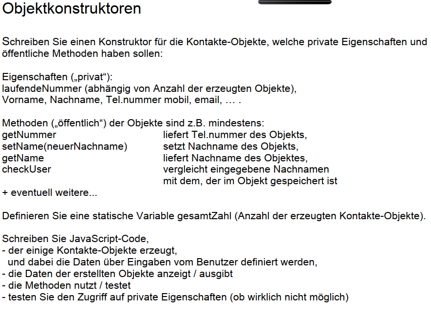

Vorlesung 6 – Sitzung vom 1.12.2022
In der sechsten Vorlesung haben wir uns mit Objekten auseinandergesetzt. Im Gegensatz zu primitiven Datentypen dienen Objekte zur Speicherung von Schlüssel-Wert-Paaren komplexerer Daten.
Objekte
Neben vielen vordefinierten Objekten wie bspw. Date und Math kann man
in JavaScript auch eigene Objekte erzeugen, deren Eigenschaften
auslesen und Methoden aufrufen. Objekte können mit Gegenständen im
wirklichen Leben verglichen werden und Eigenschaften haben, die die
Merkmale beschreiben. Es gibt verschiedene Möglichkeiten JavaScript
Objekte zu erzeugen:
- Mit einem Konstruktor:
object() - über Literale
{}JSON - Konstruktorfunktion / Prototypen
- Klassenschreibweise
Wenn wir nun ein Objekt erzeugen wollen, sieht dies über den Konstruktor wie folgt aus:
var mensch = new Object();
Jetzt haben wir eine Objekthülle, allerdings ohne jeglichen Inhalt und Funktionalität. Dem Menschen können wir nun einen Namen zuweisen:
mensch.name = „Peter“;
Hier erkennen wir, dass auf die Methoden und Attribute eines Objekts mit dem Punkt-Operator zugegriffen wird.
Objekt-Literale
In der Programmierung ist ein Objektliteral eine durch Komma getrennte
Liste von Name-Wert-Paaren, die in geschweifte Klammern eingeschlossen
sind. Die Name-Wert-Paare, die auch als Eigenschaften und Methoden
bezeichnet werden, definieren die Merkmale und das Verhalten des
Objekts. Objektliterale bieten eine prägnante und bequeme Möglichkeit,
Objekte in JavaScript und anderen Programmiersprachen zu erstellen.
Hier ist ein Beispiel von einem Objekt-Literal in JavaScript:
const person = {
name: "John Doe",
age: 35,
gender: "male",
speak: function() {
console.log("Hello, my name is " + this.name);
}
};
Hier sieht man am Ende noch eine Methode in dem Objekt-Literal. Objektliterale können verwendet werden, um Objekte spontan zu erstellen und um verwandte Daten und Funktionen zusammenzufassen. Sie werden auch häufig verwendet, um Standardwerte für Funktionsargumente anzugeben, was die Erstellung und Verwendung von Funktionen mit mehreren Parametern erleichtert.
JSON
JSON (JavaScript Object Notation) ist ein weit verbreitetes Datenaustauschformat, das Daten als eine Sammlung von Name-Wert-Paaren darstellt, ähnlich den Objektliteralen in JavaScript. JSON wird häufig zur Übertragung von Daten über eine Netzwerkverbindung oder zur Speicherung von Daten in einer Datei oder Datenbank verwendet. In JavaScript sind Objektliterale und JSON-Objekte insofern ähnlich, als sie beide eine Sammlung von Name-Wert-Paaren darstellen. Es gibt jedoch einige wichtige Unterschiede zwischen den beiden. Einer der Hauptunterschiede besteht darin, dass JSON-Objekte nur Eigenschaftsnamen enthalten können, die Strings sind, während Objektliterale jeden gültigen JavaScript-Bezeichner als Eigenschaftsnamen verwenden können. JSON-Objekte können auch keine Funktionen enthalten, während Objektliterale Methoden enthalten können.
{
"name": "John Doe",
"age": 35,
"gender": "male"
}
Wie Sie sehen können, ist dieses JSON-Objekt dem Beispiel für das
Objektliteral von vorhin sehr ähnlich. Allerdings sind die
Eigenschaftsnamen alle von Anführungszeichen umgeben, und es ist keine
speak-Methode enthalten. Um ein JavaScript-Objektliteral in einen
JSON-String zu konvertieren, können Sie die Methode
JSON.stringify() verwenden. Um einen JSON-String in ein
JavaScript-Objekt zu konvertieren, können Sie die Methode
JSON.parse() verwenden.
JavaScript Konstruktoren
In JavaScript ist ein Konstruktor eine spezielle Art von Funktion, die
zum Erstellen und Initialisieren von Objekten verwendet wird.
Konstruktoren werden mit dem Schlüsselwort
class definiert und können zur Erstellung von Objekten
mit dem Schlüsselwort new verwendet werden. Hier ist ein
Beispiel für eine einfache Personenklasse mit einem Konstruktor:
class Person {
constructor(name, age) {
this.name = name;
this.age = age;
}
In diesem Beispiel nimmt die Funktion constructor() zwei Argumente,
name und age, und weist sie den
Eigenschaften name und age des zu
erstellenden Objekts zu. Um ein neues Person-Objekt mit diesem
Konstruktor zu erstellen, verwenden Sie das Schlüsselwort
new wie folgt:
const john = new Person("John Doe", 35);
Dadurch wird ein neues Person-Objekt mit dem Namen "John Doe" und dem Alter 35 erstellt. Neben der Initialisierung von Eigenschaften können Konstruktoren auch andere Methoden und Code enthalten, um das Verhalten der mit der Klasse erstellten Objekte zu definieren.
Klassen
Und hier haben wir auch schon die Verwendung von Klassen gesehen. In JavaScript ist eine Klasse eine Art von Funktion, die zur Definition eines Entwurfs für die Erstellung von Objekten verwendet wird. Sie bieten eine Syntax zur Definition objektorientierter Klassen mit Eigenschaften und Methoden. Hier ein Beipiel für eine simple Klasse 'Person':
class Person {
constructor(name, age) {
this.name = name;
this.age = age;
}
toString() {
console.log("Hello, my name is " + this.name);
}
}
In diesem Beispiel hat die Klasse Person eine
constructor()-Methode, die aufgerufen wird, wenn ein
neues Person-Objekt erstellt wird. Die Methode
constructor() initialisiert die Eigenschaften
name und age des Objekts. Um ein neues
Person-Objekt zu erstellen, verwenden Sie das Schlüsselwort
new und rufen die Person-Klasse wie eine Funktion auf.
Das haben wir oben schon gesehen als wir die Variable
const john deklariert haben. Man kann dann die Methode
toString() für das Objekt john wie folgt
aufrufen:
john.speak(); // Outputs: "Hello, my name is John Doe"
Klassen in JavaScript bieten eine saubere und leistungsfähige Syntax
für die Definition und Erstellung von Objekten. Sie sind ein zentrales
Konzept in der objektorientierten Programmierung und werden in vielen
verschiedenen Anwendungen und Kontexten verwendet. Außerdem können
JavaScript Klassen mit extends vererbt werden. In
JavaScript bezieht sich der this-Operator auf den
aktuellen Kontext einer Funktion oder Methode. Es handelt sich um ein
spezielles Schlüsselwort, das automatisch im Rahmen jeder Funktion
oder Methode definiert wird. Der Wert von this hängt
davon ab, wie die Funktion oder Methode aufgerufen wird. Außerdem gibt
es noch Objectdestrukturierung, mit der man Eigenschaften aus einem
Objekt extrahieren und sie Variablen zuweisen kann. Dies kann nützlich
sein, wenn man mit den Eigenschaften eines Objekts in einem separaten
Teil des Codes arbeiten will, oder nur einige wenige Eigenschaften aus
einem großen Objekt extrahieren will. Hier ist ein Beispiel für die
Destrukturierung von Objekten in JavaScript:
const user = {
name: "John Doe",
email: "johndoe@gmail.com",
age: 32
};
// Destructure the "name" and "age" properties from the "user" object
const { name, age } = user;
console.log(name); // Output: "John Doe"
console.log(age); // Output: 32
Kapselung
Kapselung verbirgt die internen Details oder die Implementierung eines
Objekts vor der Außenwelt. Durch Kapselung können Sie Module mit einer
klar definierten Schnittstelle erstellen, die andere Teile Ihres Codes
verwenden können, ohne dass sie wissen müssen, wie das Modul
implementiert ist. Die Kapselung ist neben der Vererbung und der
Polymorphie eines der Grundprinzipien der objektorientierten
Programmierung (OOP). Sie wird in der Regel durch die Verwendung von
Zugriffsmodifikatoren wie den Schlüsselwörtern public,
private und protected erreicht, die
festlegen, ob auf eine Eigenschaft oder Methode einer Klasse von
außerhalb der Klasse zugegriffen werden kann.
class User {
// The "name" property is "private"
// It can only be accessed from within the User class
#name = "John Doe";
// The "getName()" method is "public"
// It can be called from outside the User class
getName() {
return this.#name;
}
}
const user = new User();
console.log(user.getName()); // Output: "John Doe"
Um mit Klassen umgehen zu lernen haben wir eine Übung mit Objektkonstrutkoren gemacht:
Die Lösung dazu ist hier zu finden.